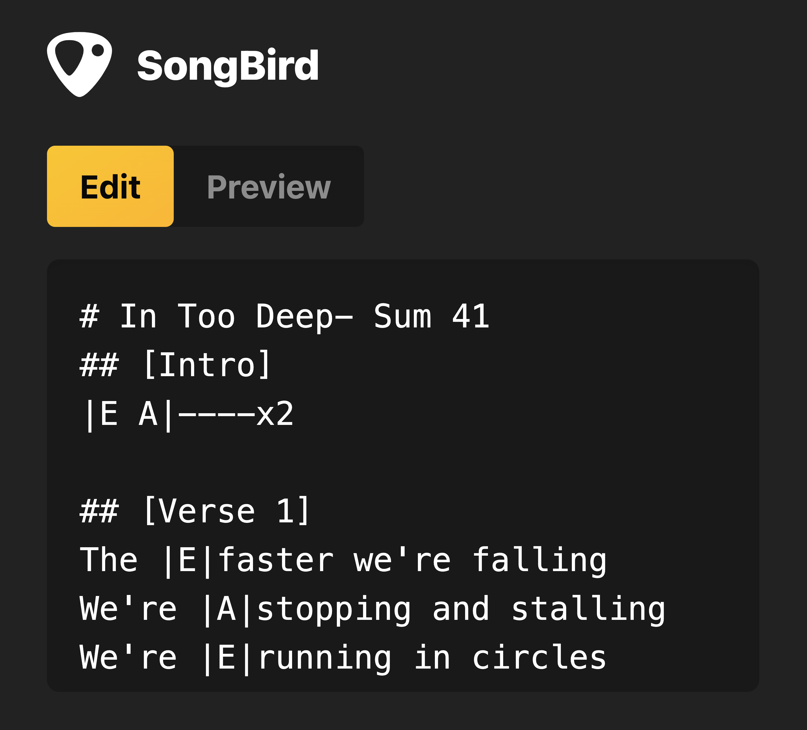
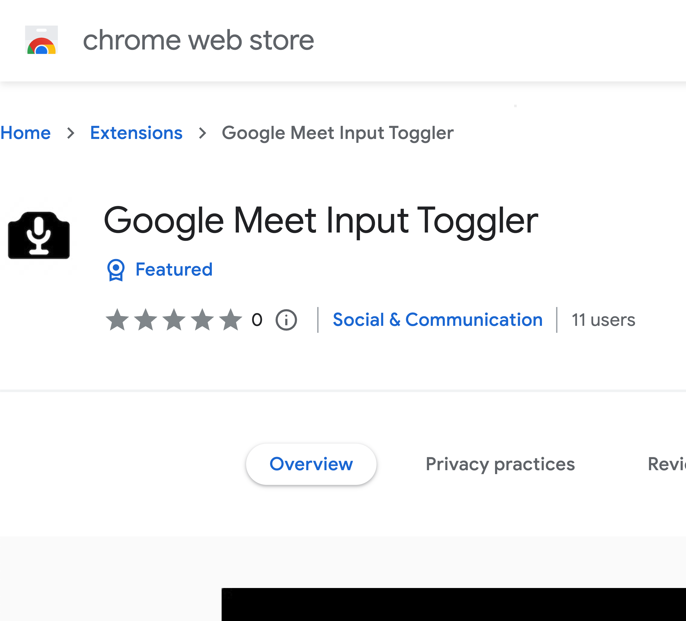

Tannor Breitigam
Hey there 👋
Welcome to my website! It's here to give a brief intro to who I am professionally, and of course to show I can make things with code.
who i am
I'm a full-stack software engineer living in Portland, Oregon. My family and I love it here, and my dream career in tech is one where I get to learn and grow in this community as part of an intimate and highly collaborative team. My biggest strengths are adaptability and willingness to explore new things. I've yet to find a stack I can't make myself useful in, and quickly.
what i'm good at
- frontend web development (and I **actually like CSS**. Really.)
- backend development, designing APIs and evolving them intelligently in a sympathetic and non-breaking way
- writing SQL (I've been using it for about 10 years, since college)
- scripting and automation (I sometimes write JavaScript on my phone??)
- clear, honest communication
languages and technologies
- TypeScript / JavaScript / Node
- React
- CSS (both vanilla and with Tailwind)
- Scala
- Python
- SQL (mostly PostgreSQL)
- GraphQL
- AWS
some things i've built
SongBird
A simple markdown editor for lyrics that displays the whole song at once
Google Meet Input Toggler
A Chrome extension to toggle your Google Meet microphone or camera with global shortcuts
And more...
I'm working on new things all the time. Take a look at my Github repositories page to see more (including an embarrassing array of old projects that likely don't work anymore).
where i've worked
My last software job was at small fintech startup, Flow Finance, where I was the only cold hire on the engineering team and was quickly marked for promotion from junior to mid within 6 months.
Flow Finance
Software Engineer, Backend
Jul 2022 - Jan 2023My primary responsibility was to build and maintain an API for initiating and managing customer OAuth integrations. We built SAM applications in Scala, leveraging AWS Lambda, AppSync, API Gateway (and more) to expose both REST and GraphQL APIs to internal applications.
Junior Software Engineer, Frontend
Jul 2021 - Jul 2022I Developed major features for internal and costomer-facing web apps with Typescript, React, and Redux. Working closely with our product and design teams, I used CSS and Tailwind to create beautiful UI and thoughtful UX.
University of Redlands and Walla Walla University
In my pre-coding days, I worked in higher education at various tech-adjacent admin roles, both for Walla Walla University and University of Redlands. I wrote SQL and managed BI systems, tuition AR/AP, and departmental IS/IT support and maintenance. I also briefly served as an interim Director of Institutional Research at WWU.
what i've studied
full-stack web development
I graduated from App Academy (an intense 1000+ hour coding bootcamp with a < 4% acceptance rate) after attending from November 2020 to April 2021.
business administration & finance
- I have my MBA (Finance concentration) from University of Redlands where I attended from 2018 to 2019.
- Before that, I went to Walla Walla University from 2011 to 2015 where I got my BBA (Bachelor of Business Administration, also with a Finance concentration).
I graduated from App Academy (an intense 1000+ hour coding bootcamp with a < 4% acceptance rate) after attending from November 2020 to April 2021.
would you like to know more?
Send me an email 👇